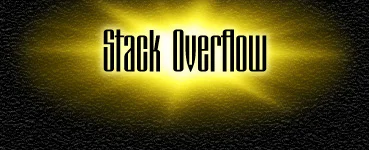
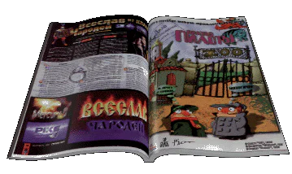

 |
| ... |
| Настал черед и этой
давным давно забытой страницы. Во-первых, ее
прежнее название было признано слишком
вульгарным, так что теперь мы вынуждены
довольствоваться английской альтернативой.
Во-вторых, сюда временно переехала библиотека. Итак, интервью продюсера нашей студии из последней Страны Игр, любезно предоставленное нам Сергеем Лянге. |
| ... |
 |
| Помимо нашей студии в разработке Летописи Времен участвует и команда разработчиков из компании 1С под руководством суперинтерактивного молодого человека по имени Александр Никитин. На его широких мужских плечах лежит груз в виде второго проекта Летописи под названием "Князь: Амулет Дракона". Интервью опять-таки Стране Игр, и также любезно предостваленное Сергеем Лянге. |
|
| Сюжет Летописи Времен достаточно сложен (да так, что иногда даже наш дизайнер ломает себе голову, вспоминая, кто, кого, где и зачем. Убил, разумеется). Предлагаемая Вам статья из "Навигатора Игрового Мира", думаем, поможет разобраться во всех закоулках времени Летописи Времен. Материалы любезно предоставлены Денисом Давыдовым. |
Text and graphics are copyright (c) 1997 by Snowball Interactive Entertainment, Inc. |